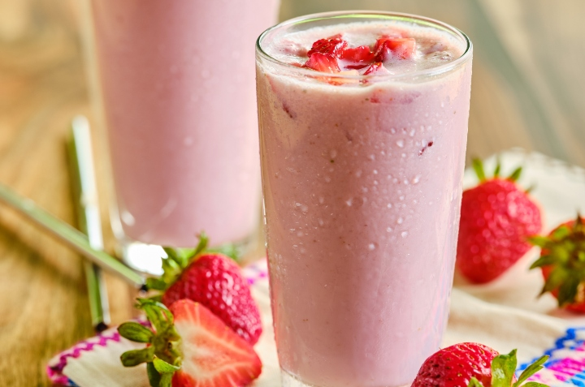

Agua Fresca de Fresas con Crema

creamy strawberry agua fresca!
Agua fresca de fresas con crema, or strawberries and cream, is a refreshing drink that's a variation on the classic dessert of strawberries with cream.
ingredients
- 2½ pounds strawberries, hulled and diced, divided
- 2 cups of water
- 1 (14 1/2 ounce) can sweetened condensed milk
- 1 (12 ounce) can evaporated milk
- 1 tablespoon vanilla
- 1/2 cup sugar, or as needed
- 3 cups ice cubes, or as needed
Instructions
- Place 2 pounds of the strawberries and water in a blender cup and blend until smooth.
- Pour strawberry puree into a large pitcher. Add sweetened condensed milk, evaporated milk, and vanilla.
Stir until well incorporated. Taste; add sugar, a little at a time, as needed.
- Add ice cubes and stir. Gently stir in remaining 1/2 pound diced strawberries. Chill until ready to serve.